|
PART I: YOUR FACE |
|
Step 03: Making
Your Picture Blue |
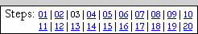 |
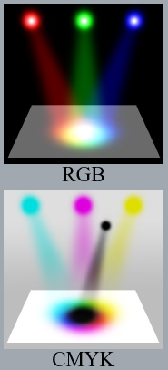Before
we go any further, let's take a quick second to learn a little about how
computers think about color.
While there are hundreds of millions of different colors in nature, the human
eye can only distinguish a few million (anywhere between 3 and 10 million
depending on the person) because our eyes compress visible light into three
primary colors: red, green, and blue. So, when we designed movie projectors, televisions, computers,
monitors, etc. we only worried about reproducing the colors we can see, and not
about reproducing colors in their true nature.
There are two basic ways of reproducing color:
- The first is used when a light source, such as a computer monitor or TV,
is projecting the color. Photoshop calls this the
RGB color system because it
uses various shades of Red, Green, and Blue to make every other color. When
all three are present, as in the top graphic to the right, we get white. When none
of the three are present, we get black. This color system also goes by the
name of Additive Colors, as the more color you put in the brighter the resulting color is.
- The second is used by printers, inks, and paint and is known as CMYK. We start with a surface, like a sheet of paper or
the side of a house, and
as we add various colors onto it the result will get darker and darker. Here, our
primary colors are Cyan
(the absence of red), magenta (the absence of green), and yellow (the absence of blue).
These three mixed together will create a very dark color, but not always true
black, so there is also a separate black color as well. Yes, the "K" stands for black, because "B" already stands for blue. If you use this
method, Photoshop will be thinking of your colors in these four channels, but of course it will
still be translating them to RGB to be displayed on your monitor. This color system also goes by the name of
Subtractive Colors, as the more color you put in the darker the resulting
color is (think about pouring all different colors in a paint can, what
happens as you add more color?).
Keep in mind that RGB color is best for viewing graphics on a computer monitor while CMYK color
is best for creating printed graphics.
Okay, back to our picture. We want to change the color of the picture so that
it has a blue tint so that when
we begin creating the line work (which we will do in black) we will not be confused by the
colors in the picture.
We're going to work in RGB color, so the first thing to do is to make sure it is
selected.
-
If your
Face image
is not open, open it in Photoshop now; this is the image I will be using in this
tutorial...
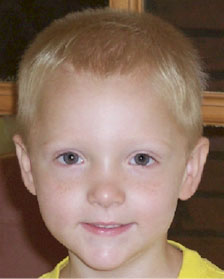
-
Click Image on the Menu
Bar...
-
Point at Mode...
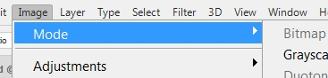
-
Make sure that RGB Color
is selected - there should be a checkmark next to RGB Color like the graphic
below...
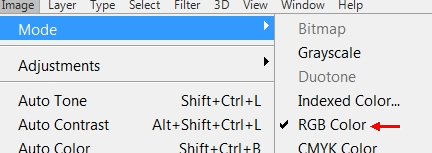
If there is no checkmark, click on RGB Color to select
it - if you already have a checkmark, you can click back on the word Image on the Menu
Bar to remove the menu
Note that "Grayscale" and "CMYK Color" are also in this submenu, as well as other less common
methods of color.
Now let's take a look at working with individual colors within RGB. We first
need to get up the Levels editor.
- Click Image on the Menu Bar
- Point at Adjustments then click Levels...
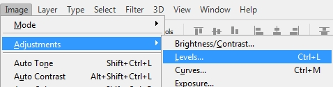
The Levels editor window (pictured below) opens...
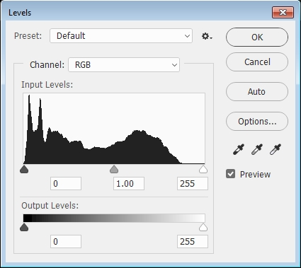
Before we make any changes, let's look at how the Levels
editor functions. The Channel selector
at the top tells whether you are working with red, green, blue, or all of them
at once (named
RGB, the default selection). Photoshop keeps
separate level settings for each of these four channels. The histogram
(that black mountain looking thing under Input Levels:)
tells you how common shades of the selected channel are, ranging from 0 (dark)
on the left, to 255 (bright) on the right. Since we are working with a full-color photograph, the graph should show
a large amount of black, as in the screenshot above (since you are working with
a different image your graph will not look exactly like mine). If our image had only a few
colors, or was black and white, we would see a much smaller amount of black in
the graph.
The main controls in this panel are the three arrows under the graph (see
Image 1 below) which control the Input Level,
and the two arrows under the gradient below them (see Image 2 below) which
control the Output Levels. The input arrows define where black, white, and 50%
gray are on the scale. The output arrows define how white the brightest white can be, and how dark the darkest
dark can be.
If you have changed the levels in a way (and you should NOT have, but if you did...), hit
"Cancel" and then get the levels editor back up again. We're going to use the levels editor to turn
the picture a light blue. We do this because the dark colored picture can obscure some of
the details of the black ink that we will be drawing with, and dark smudges cannot slip by as easy if they don't blend in with
the picture color.
Here is how to make yourself blue.
- Click the dropdown arrow next to Channel and
click Blue...
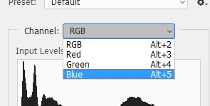
Notice when you select Blue that the histogram
changes
- We want to make it so that blue is all light, so grab the dark output
arrow (this is the one under the gradient bar all the way to the left under the black section)...
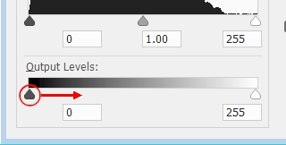
and drag it as far to the right as it will go - when you drag it all the way to
the right, it should disappear behind the white arrow...

This is ok - we want this at this point - and you should now be blue...
You should now be blue! You can now fine-tune your image to get a shade of
blue you are comfortable working with.
- Change the Channel from Blue to Green...
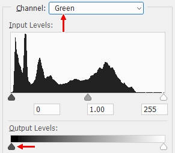
Notice that the dark output arrow we were working
with a moment ago has now returned to the left side (bottom arrow above) - this is because we are
no longer working with blue but are now working
with green
- Grab the dark output arrow (the same one we dragged around when
working with blue) and drag it to the right until you have a nice shade of
blue that allows you to see all the image details...
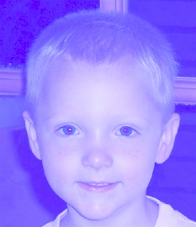
You can drag to any amount you like, but 90 is usually
an amount that works great...
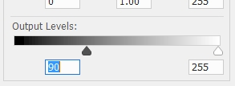
- Click OK
YOU SHOULD BE
BLUE AND NOT
PURPLE OR
GREEN OR
LIGHT BLUE or any other color!
It should look something like the image above - if your image is purplish or
greenish or light bluish then close your image without saving and reopen it and
start over and be sure you are working with the correct channel when you make your
changes.
I should probably point out that there are other ways, even easier ways, to
turn the picture blue, but it will help a lot if you familiarize yourself with
the Levels editor, which can be very useful at completing other tasks, such as
brightening a final picture that is too dark. Keep in mind that your shade of
blue does not have to match mine (in fact, when doing this on your own at some
future time you can actually make the image any color other than black that you
like), you just want the image a color other than black so that you can see the
lines when you begin drawing them in.
Let's save our image at this point so we can begin creating the lines in the
next step.
- Click File then click Save
01 |
02 | 03 |
04 |
05 |
06 |
07 |
08 |
09 |
10 |
11 |
12 |
13 |
14 |
15 |
16 |
17 |
18 |
19 |
20